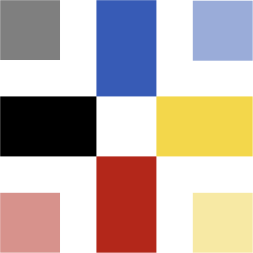

Мавка 0.111.0
Мавка 0.111.0

Вступ до Теорії Мавки
Теорія Мавки це набір простих концептів, що роблять Мавку такою, якою вона є.
Основа Теорії Мавки не обовʼязкова для розуміння. Будь-яка людина може програмувати Мавкою і без її розуміння. Проте досконале розуміння Теорії Мавки дозволяє бачити програмування та життя з іншого місця. З того місця, з якого дивлюсь я.
Хоч самі концепти надзвичайно прості, деякі з них усвідомити часто важко.
Теорія Мавки є для українського розуму. Але може бути застосована будь-якою людиною та до будь-чого.
Теорію Мавки можна ще називати теорією української мови програмування, загальною теорією мов програмування або теорією всього від Мавки.
душа = Тіло()
темрява = Світло()
смерть = Життя()
кінець = Початок()
ніщо = Все()